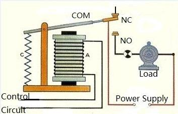
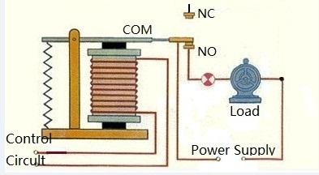

The Relay Shield provides a solution for controlling high current devices that cannot be controlled by the Arduino's Digital I/O pins due to their current and voltage limits.
The Relay Shield features four high quality relays and provides NO/NC interfaces, four dynamic LED indicators to show the on/off state of each relay, and the standardized shield form factor to provide a smooth connection to the Arduino/Seeeduino board or other Arduino compatible boards.

| Item | Min | Typical | Max | Unit |
|---|---|---|---|---|
| Supply Voltage | 4.75 | 5 | 5.25 | VDC |
| Working Current | 8 | / | 250 | mA |
| Switching Voltage | / | / | 35 | VDC |
| Switching Current | / | / | 8 | A |
| Frequency | / | 1 | / | HZ |
| Switching Power | / | / | 70 | W |
| Relay Life | 100,000 | / | / | Cycle |
| ESD contact discharge | ±4 | KV | ||
| ESD air discharge | ±8 | KV | ||
| Dimension | 68.7X53.5X30.8 | mm | ||
| Net Weight | 55±2 | g | ||
Place 2 layers of electrical tape on the top of the Arduino's usb connector. This will prevent the relay shield from making contact. Do not operate voltage more than 35V DC.
J1 Interface/Terminal Pin Description:
Terminals J2-4 are similar to J1 except that they control RELAY2-RELAY4 respectively.
Note: Only four Arduino Digital I/O pins, pins 4-7, are required to control the four different relays. Additionally the 5V and two GND Arduino pins are also required to power up the Relay Shield.
Relays are basically electromagnetic switches: when the relay is energized by the control circuit (i.e. when a voltage and current is applied to the coil), the current and coil create a magnetic field which is able to attract the COM terminal towards the NO terminal, when the control circuit removes the applied voltage and current the COM terminal returns to contact the NC terminal due to a mechanical force (usually a spring).
Some practical relay applications include: control of high voltage using low voltage, motor control, remote control, anti-hearing alarm, automatic temperature alarm, incubators and son on.
A motor control application with one relay and one motor is shown below:
|  The motor is not currently running since there is no connection from the power supply to the motor. The control circuit is not energizing the relay, so the COM terminal is not attracted to the NO terminal |
 The motor is running since it is contact with the power supply's + and - terminals. The control circuit is energizing the relay and its magnetic force has attracted the COM terminal to the NO terminal. |
In the case of the Relay Shield, the two “Control Circuit” terminals for each of the four relays are controlled by only one Arduino Digital I/O pin. Pins 4, 5, 6, and 7 control relays 4, 3, 2, and 1 respectively.
Now that you know how a relay works internally, let us show you how to use the Relay Shield.
Note: The external power supply in the figure above can be a battery or power supply. The external supply must be able to provide enough current and be set to the correct voltage for the motor. In our testing, we used a lithium battery as the external power supply for the motor.
4. Start the Arduino IDE and upload the following code to the Arduino board:
int MotorControl = 5; // Digital Arduino Pin used to control the motor // the setup routine runs once when you press reset: void setup() { // declare pin 5 to be an output: pinMode(MotorControl, OUTPUT); } // the loop routine runs over and over again forever: void loop() { digitalWrite(MotorControl,HIGH);// NO3 and COM3 Connected (the motor is running) delay(1000); // wait 1000 milliseconds (1 second) digitalWrite(MotorControl,LOW);// NO3 and COM3 Disconnected (the motor is not running) delay(1000); // wait 1000 milliseconds (1 second) }
When you have uploaded the code to your Arduino/Seeeduino board the motor should run one second, stop for another second and repeat the process indefinitely. When the motor is running (NO3 and COM3 are connected), the NO3 LED indicator will be lit.
Because the Relay Shield uses digital pins on the Arduino to control each the relays, more than one Relay Shield can be used with the same Arduino board, to do so simply follow these steps:
3. Now you can control relays 1, 2, 3, and 4 in Relay Shield #2 using the Arduino’s 8, 9, 10, and 11 digital I/O pins. See sample code below for controlling RELAY1 in Relay Shield #2:
int relay1inShield2 = 8; // Digital Arduino Pin 8 is used to control relay 1 in Relay Shield #2 // the setup routine runs once when you press reset: void setup() { // declare pin 8 to be an output: pinMode(relay1inShield2, OUTPUT); } // the loop routine runs over and over again forever: void loop() { digitalWrite(relay1inShield2,HIGH); // relay is energized (NO is connected to COM) delay(1000); // wait 1000 milliseconds (1 second) digitalWrite(relay1inShield2,LOW); // NO is disconnected from COM delay(1000); // wait 1000 milliseconds (1 second) }
Copyright (c) 2008-2016 Seeed Development Limited (www.seeedstudio.com / www.seeed.cc)